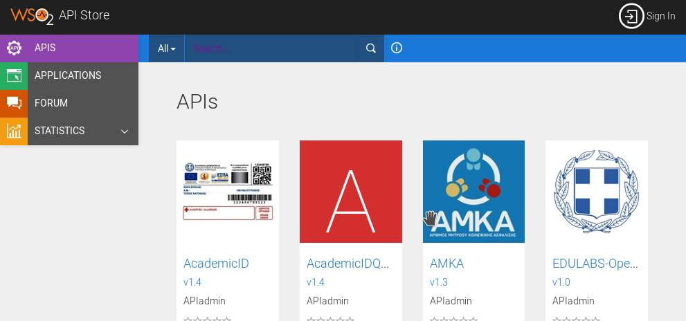
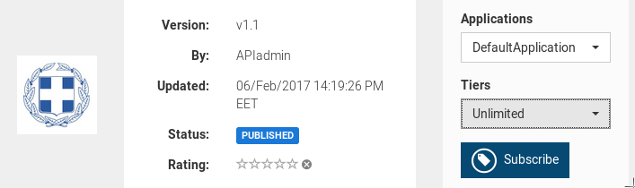
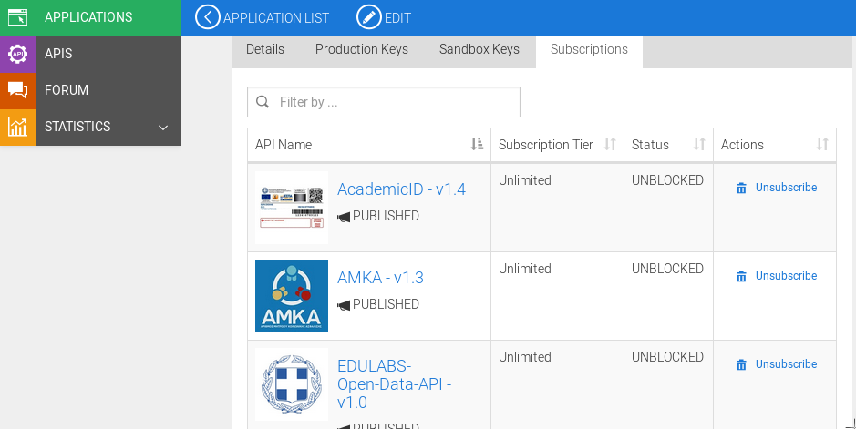
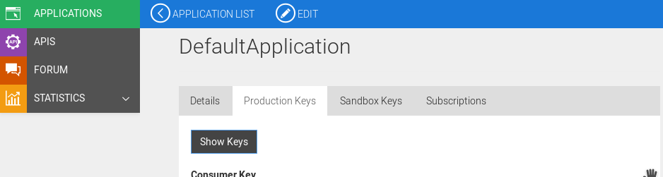
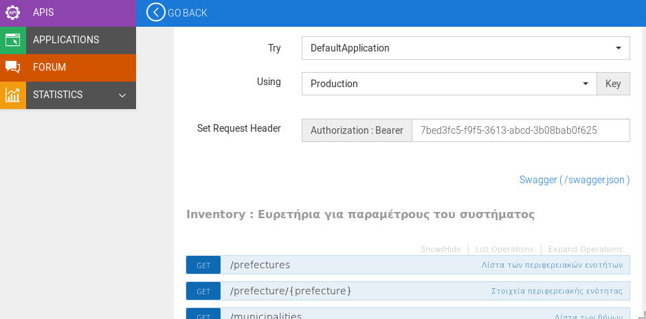
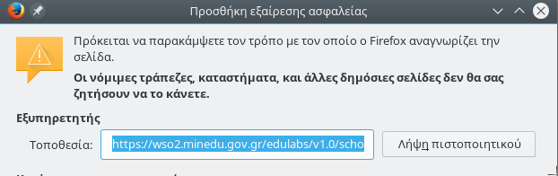
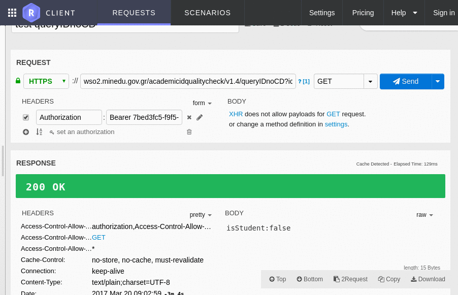
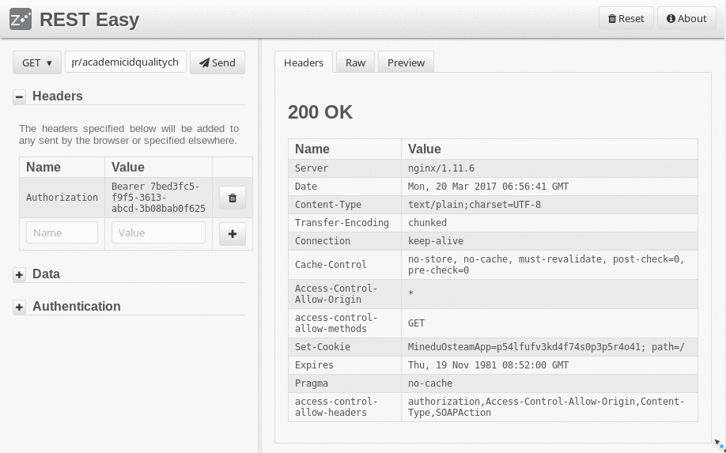

Κατανάλωση υπηρεσίας ιστού από την πλατφόρμα διαλειτουργικότητας του ΥΠΠΕΘ
Ομάδα Ανάπτυξης Λογισμικού Ανοικτού Κώδικα
ostmgmt.minedu.gov.gr | osteam@minedu.gov.gr | git.minedu.gov.gr
Περί "osteam"
Συγκρότηση με απόφαση Υπουργού Αρ.Πρωτ.: 159733/Α3/28-9-2016
Κατανενημένη ομάδα με αποσπασμένους εκπαιδευτικούς Πληροφορικής σε ΥΠ.Π.Ε.Θ και Π.Δ.Ε.
Ακολουθεί το πλαίσιο Scrum / Agile μεθοδολογία
Eσωτερικός οδηγός λειτουργίας git.minedu.gov.gr/itminedu/osguide
Διάθεση έργων από το αποθετήριο κώδικα του Υπουργείου git.minedu.gov.gr/itminedu
Επικοινωνία ομάδας με ομαδοσυνεργατικά εργαλεία mattermost.minedu.gov.gr
Διαλειτουργικότητα
ostmgmt.minedu.gov.gr/projects/wos2_esb
git.minedu.gov.gr/itminedu/wso2_esb
Ομάδα Υλοποίησης Έργου
Ηλιάδου Βασιλική
Ασβεστάς Κώστας | Γεωργακόπουλος Παναγιώτης | Παπαδάκης Σταύρος
Πλατφόρμα διαλειτουργικότητας με χρήση ενδιάμεσου λογισμικού WSO2
Service Oriented Architecture Middleware Cluster
Πρόσβαση με ενιαίο,
ελεγχόμενο και ασφαλή τρόπο
από ένα κεντρικό σημείο
σε υπηρεσίες που προσφέρουν δεδομένα προς
κατανάλωση από πληροφοριακά συστήματα
Απόκρυψη πολυπλοκότητας υλοποίησης διασυνδέσεων από τον τελικό προγραμματιστή που καταναλώνει δεδομένα από τις υπηρεσίες διαλειτουργικότητας με Web Services
Διαχείριση πρόσβασης
με έκδοση κωδικών για πρόσβαση στις διαθέσιμες υπηρεσίες
και ορισμό πρόσβασης ανά χρήστη και ανά υπηρεσία
Διαχείριση κίνησης και παρακολούθηση κίνησης
Έλεγχος κίνησης στα API, υποστήριξη πακέτων πρόσβασης
Απλοποιημένες βιβλιοθήκες και διεπαφές για προγραμματιστές εφαρμογών,
τεκμηρίωση μέσω οδηγών κατανάλωσης και ανάπτυξης yπηρεσιών
Κατανάλωση;
- απόκτηση access token από το Κατάστημα API
- μέσω διεπαφής web
- προγραμματιστικά
- γνωριμία με το API
- διαθέσιμο documentation (κανονικά εδώ , προσωρινά εδώ )
- δοκιμές από το API console
- ανάπτυξη, ανάπτυξη, ανάπτυξη
Κατάστημα API
https://wso2.minedu.gov.gr:9445/store

Στο κατάστημα προσφέρονται APIs που παρέχει ο WSO2 API Manager
Πρόσβαση στα Web API μόνο πάνω από HTTPS (SSL)
Η εγγραφή είναι προς το παρόν ελεγχόμενη
Συνδρομές
Κάθε χρήστης έχει στη διάθεση του διάφορα προφίλ εφαρμογών με τα οποία μπορεί να εγγραφεί συνδρομητής σε ένα API

Συνδρομές

Από κάθε προφίλ εφαρμογής ο χρήστης μπορεί να παράγει access tokens

Η πλατφόρμα παρέχει λειτουργίες δημιουργίας και διαχείρισης access tokens προγραμματιστικά
$ curl -k \
-d "grant_type=password&username=Username&password=Password" \
-H "Authorization: Basic Base64(consumer-key:consumer-secret)" \
https://wso2.minedu.gov.gr/token
Δοκιμή API
Άμεση δοκιμή του API (swagger)

... μέχρι να υπάρξει κανονικό certificate ...

Κατανάλωση API
- Δοκιμαστικά
- RESTeasy
- RESTlet
- ...και τόσα άλλα...
- Προγραμματιστικά
- cURL
- Βιβλιοθήκες σε διάφορες γλώσσες
- ...
RESTlet
RESTeasy
cURL
$ curl -k -X GET --header 'Accept: text/plain' \
--header 'Authorization: Bearer ........' \
'https://wso2.minedu.gov.gr/acidtest/v1.4/queryIDnoCD?id=...'
isStudent:false
Δείγματα βιβλιοθηκών, εφαρμογών
- Desktop app αναπτυγμένη σε Java
- Web app αναπτυγμένη με το SLIM framework
- Barebone εφαρμογή αναπτυγμένη σε PHP
Case study
- Εφαρμογές (gui, command line) κατανάλωσης resources του API ακαδημαϊκής ταυτότητας
προσωρινά αποθετήρια git.minedu.gov.gr
Java
/pgeorg/WebServiceClientsLibrariesAndApps
PHP
Case study

spapad@developer:~/WWWroot/_vhosts/code-samples/academic-id/data-extract-info (master) [14:42:07]
$ php index.php --input ANAZITISI_ENERGON_FOITITON.csv --amka 0 --line 2
Ζητήσατε να γίνει έλεγχος από τo αρχείo: ANAZITISI_ENERGON_FOITITON.csv
Έναρξη στοιχείων από τη γραμμή: 2
Αριθμός στήλης ΑΜΚΑ: 0
Αποθήκευση στο αρχείο (csv): out.csv
Έλεγχος όλων των εγγραφών
POP 1 lines...
...
=========================================
Άντληση academic id από ΑΜΚΑ
...
Results:
% results:
Προπτυχιακοί: 0.92% (135)
Μεταπτυχιακοί: 0.29% (43)
Διδακτορικοί: 0.01% (2)
Άλλο: 98.77% (0)
=========================================
Άντληση στοιχείων από academic id
...
Βήμα πρώτο
Βιβλιοθήκη αφαίρεσης κλήσεων GET, POST, PUT
Κοινή για τις εφαρμογές
Δειγματική υλοποίηση με αξιοποίηση php cURL
Μπορεί να αξιοποιεί οτιδήποτε
guzzle |
Yii2 httpclient |
Yii2-Curl |
...
αρκεί να υπάρχει ένα κατάλληλο επίπεδο αφαίρεσης
Gr\Gov\Minedu\Osteam\Slim\Client
namespace Gr\Gov\Minedu\Osteam\Slim;
class Client {
public function put($uri, $payload, $headers = []) {...}
public function post($uri, $payload, $headers = []) {...}
public function get($uri, $params = [], $headers = []) {...}
protected function setCommonCurlOptions($ch, $uri, $headers) {...}
}
Παράδειγμα: POST/cURL
public function post($uri, $payload, $headers = []) {
$ch = curl_init();
$this->setCommonCurlOptions($ch, $uri, $headers);
curl_setopt($ch, CURLOPT_POST, true);
curl_setopt($ch, CURLOPT_POSTFIELDS, $payload);
curl_setopt($ch, CURLOPT_RETURNTRANSFER, true);
$result = curl_exec($ch);
if (curl_errno($ch)) {
throw new Exception("Λάθος κατά την κλήση του {$uri}. Curl error: " . curl_error($ch) . " Curl info: " . var_export(curl_getinfo($ch), true));
}
if (intval(($http_code = curl_getinfo($ch, CURLINFO_HTTP_CODE)) / 100) != 2) {
// πραγματοποιήθηκε κλήση αλλά δεν ήταν "επιτυχής"
return [
'success' => false,
'http_status' => $http_code,
'response' => $result
];
}
curl_close($ch);
return [
'success' => true,
'http_status' => $http_code,
'response' => $result
];
}
Παράδειγμα guzzle μεσα από Drupal code παρακάτω...
Βήμα δεύτερο
Βιβλιοθήκη αφαίρεσης λειτουργιών api
Κοινή για τις εφαρμογές
Μία τουλάχιστο μέθοδο ανά λειτουργία
και όσες περισσότερες ανά
"περίπτωση χρήσης"
Gr\Gov\Minedu\Osteam\App\Extract
namespace Gr\Gov\Minedu\Osteam\App;
use Gr\Gov\Minedu\Osteam\Slim\Client;
class Extract {
public function getAcademicID($amka, $auth_header_student) {...}
public function getStudentInformation($academic_id, $auth_header_student) {...}
protected function generateAuth() {...}
}
Παράδειγμα: getAcademicID()
if (preg_match('/^[0-9]{11}$/', $amka) !== 1) {
return 'ERROR:Service Call Parameters Error, student amka id must be 11 digit number';
}
$data = [ 'fields' => 'academicID' ];
$headers = [
"Authorization: {$auth_header_student}",
'Content-Type: application/json',
'Accept: */*',
'User-Agent: osteam php command line client'
];
try {
$results = $this->client->get($this->settings['base_uri_student'] . "/{$amka}", $data, $headers);
} catch (\Exception $e) {
return "ERROR:" . $e->getMessage();
}
if ($results['success'] === false) {
return "ERROR:{$results['response']}, {$results['http_status']}";
}
return $results['response'];
Αντίστοιχα και σε άλλες περιπτώσεις... SLIM
Gr\Gov\Minedu\Osteam\Slim\{BaseApp,App}
class App extends BaseApp {
public function queryID($req, $res, $args) {
$identity = $req->getQueryParam('id', 0);
// input validation/sanitization
$data = json_encode(["SubmissionCode" => $identity]);
$auth = $this->generateAuth();
$headers = [
"Authorization: {$auth}",
'Content-Type: application/json',
'User-Agent: Academic ID SLIM Client/v1.0 osteam'
];
$results = $this->client->post($endpoint, $data, $headers);
//...check..check...check
return $res->withJson(array_merge(
BaseApp::coreResponseData(false),
[ 'message' => '...']
), 400);
}
}
Yii αντίστοιχα...
namespace common\components;
use Yii;
use yii\base\Component;
use yii\base\InvalidConfigException;
class MyAwesomeApiProvider extends Component {
public function init() {
parent::init();
/* κλπ */
}
public function getAcademicID() {
/* κλπ */
}
}
Βήμα τρίτο
Λειτουργίες εφαρμογής για τον τελικό χρήστη
Αρχείο ρυθμίσεων
$settings = require(__DIR__ . '/settings.php');
//////////////////////////////////////////////
return [
'osteam_codebase' => __DIR__ . '/src',
'base_uri_student' => 'https://wso2.minedu.gov.gr/academicid',
'base_uri_query' => '',
'username' => 'username-for-endpoint',
'password' => 'password-for-endpoint',
'auth_header_student' => 'Bearer ...', // wso2 auth header
'timeout' => 1, // number of seconds between web service calls
'NO_SAFE_CURL' => true
];
Autoloading (*)
// barebone app - autoload classes from src/ dir
spl_autoload_register(function ($class_name) use ($settings) {
$class_name_parts = explode('\\', $class_name);
$class_filename = $settings['osteam_codebase'] . '/'
. end($class_name_parts) . '.php';
if (file_exists($class_filename)) {
include $class_filename;
if (class_exists($class_name)) {
return true;
}
}
}
Κλήσεις
use Gr\Gov\Minedu\Osteam\Slim\Client;
use Gr\Gov\Minedu\Osteam\App\Extract;
$client = new Client($settings);
$app = new Extract($client, $settings);
try {
$response = $app->getAcademicID($amka, $settings['auth_header_student']);
...
} catch (\Exception $e) {
...
}
$get = array_walk($csv_data, function (&$v, $k) use ($app, $amka_column, $settings, $out_file_fp) {
try {
$response = $app->getStudentInformation($academic_id, $settings['auth_header_query']);
...
} catch (\Exception $e) {
...
}
}
try {
$response = $app->getAcademicID($amka, $settings['auth_header_student']);
if (($response === false) || ($response === 'false')) {
$beneficiary_name = '';
$academic_id = null;
} else {
list ($beneficiary_name, $academic_id) = explode(',', $response);
}
$response = $app->getStudentInformation($academic_id, $settings['auth_header_query']);
// gets entryYear,studentshipType,departmentName,postGraduateProgram
if (mb_substr($response, 0, 5) === 'ERROR') {
} else {
$parts = explode(',', $response, 3);
if (count($parts) === 3) {
$entry_year = $parts[0];
$studentship_type = $parts[1];
$first = mb_substr($studentship_type, 0, 1);
$department_name = $parts[2];
if (mb_substr($department_name, -1, 1, 'utf8') == ',') {
$department_name = mb_substr($department_name, 0, mb_strlen($department_name, 'utf8') - 1);
}
if ($first === 'Δ') { // Διδακτορικό
$min_years = 5;
} elseif ($first === 'Μ') { // Μεταπτυχιακό
$min_years = 2;
} elseif (((mb_strpos($department_name, 'ΙΑΤΡΙΚΗΣ') !== false) ||
(mb_strpos($department_name, 'ΜΗΧΑΝΙΚΩΝ') !== false))
&& mb_strpos($department_name, 'ΠΑΝΕΠΙΣΤΗΜΙΟ') !== false) {
$min_years = 6;
} elseif (mb_strpos($department_name, 'ΕΚΠΑΙΔΕΥΤΙΚΩΝ') !== false
&& mb_strpos($department_name, 'ΜΗΧΑΝΙΚΩΝ') !== false) {
$min_years = 5;
} elseif (((mb_strpos($department_name, 'ΓΕΩΠΟΝΙΚΗ') !== false) ||
(mb_strpos($department_name, 'ΓΕΩΠΟΝΙΑΣ') !== false) ||
(mb_strpos($department_name, 'ΑΓΡΟΤΙΚΗΣ') !== false) ||
(mb_strpos($department_name, 'ΓΕΩΠΟΝΙΚΟ') !== false))
&& mb_strpos($department_name, 'ΠΑΝΕΠΙΣΤΗΜΙΟ') !== false) {
$min_years = 5;
} elseif (mb_strpos($department_name, 'ΠΟΛΥΤΕΧΝΕΙΟ') !== false
|| mb_strpos($department_name, 'ΠΟΛΥΤΕΧΝΙΚΗ') !== false) {
$min_years = 5;
} else {
$min_years = 4;
}
} else {
// ...
}
}
} catch (\Exception $e) {
// ...
}
Και στο Yii με χρήση params.php
return [
// ...
'components' => [
'apiProvider' => [
'class' => 'common\components\MyAwesomeApiProvider',
'param_param_param' => 'whatever'
],
],
// ...
];
//////////////////////////////////////
Yii::$app->apiProvider->getAcademicID();
Και σε Drupal
// credits https://git.minedu.gov.gr/ackatsaros
// inject στο drupal contructor
use GuzzleHttp\Client;
public function __construct(Client $http_client) {
$this->httpClient = $http_client;
}
public static function create(ContainerInterface $container) {
return new static($container->get('http_client');
}
//////////////////////////////////////
$this->httpClient = new Client(['verify' => false ]);
$res_amka_checker = $this->httpClient->get($url, array('headers' => array('Authorization' => $this->key)));
if (!is_null($res_amka_checker) && $res_amka_checker->getStatusCode() == 200) {
$check_result_amka = $res_amka_checker->getBody();
if($check_result_amka == 'false') {
} else if ($check_result_amka == 'true') {
}
} else {
$form_state->setErrorByName('amkauser', t('Σφάλμα ελέγχου ΑΜΚΑ'));
}
Ευχαριστούμε!
ostmgmt.minedu.gov.gr
osteam@minedu.gov.gr
git.minedu.gov.gr